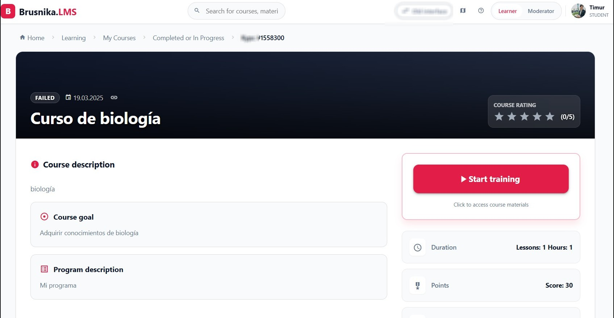
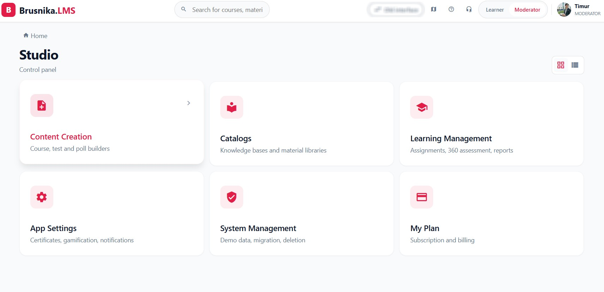
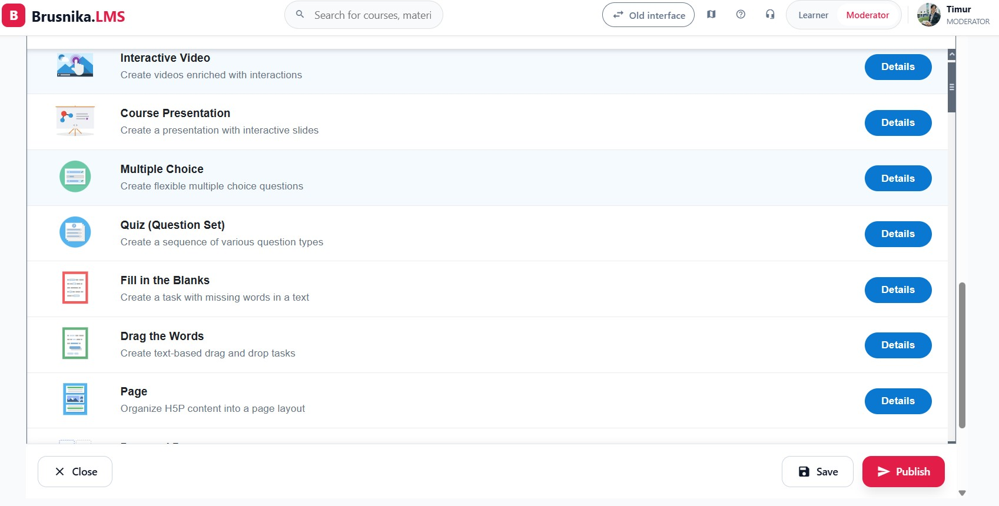

Brusnika LMS is an enterprise learning management system by Brusnika.Solutions (Estonia-based company). This addon embeds the LMS directly inside Odoo — no tab switching, no separate login required.
hr.employee and hr.department from Odoo HRmail.activity and chatter entriescalendar.eventWhen an employee clicks Open LMS in the Odoo Learning menu, this addon generates a signed URL (HMAC-SHA256). Brusnika LMS validates the signature and logs the employee in automatically — no credentials required on their end.
Requirements: Odoo 17.0 · Brusnika LMS subscription · public HTTPS on Odoo instance


